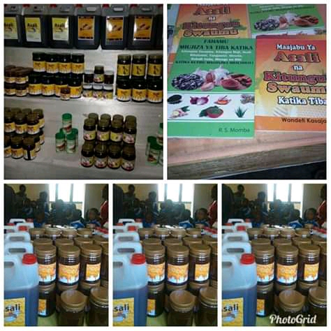
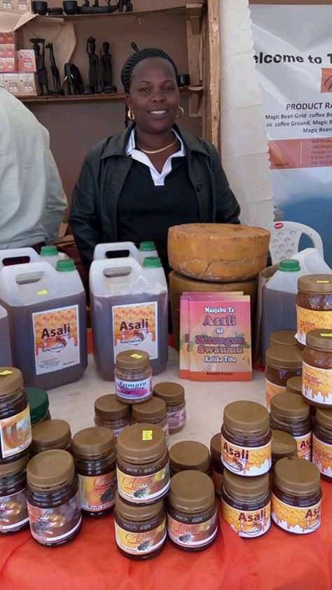
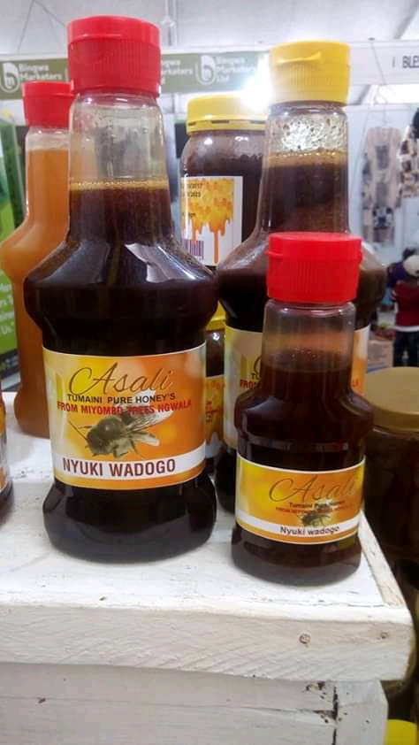
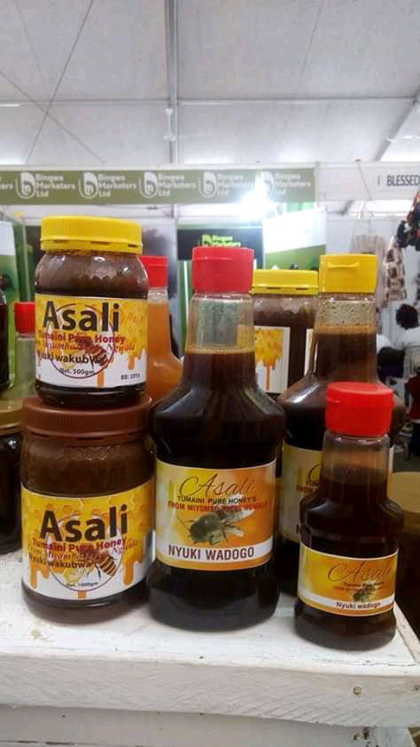
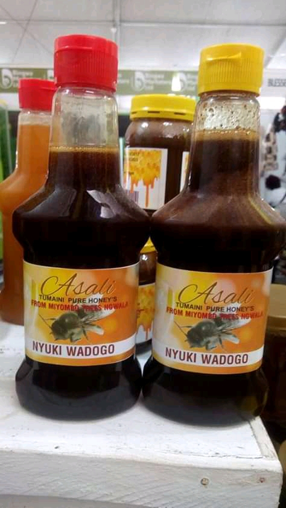

Hasara za Asali unapotumia kwa kiwango kikubwa sana kila siku, Yafuatayo ni madhara ya Asali ambayo mtu anaweza akapata na kusababisha afya yake idhorote
Asali hutengenezwa na nyuki wanao tumia vumbi maalum la maua liitwalo nectar. Kiwango cha sukari katika asali ni Asilimia 70 had 80 na kiasi kinachobaki ni maji, madini na huwa na kiwango cha protini, asali imekuwa ikitumika h kwenye matibabu ya vidonda, matatizo ya ngozi magonjwa tofauti ya tumbo na inauwezo wa kuua bacteria mwilini, Pamoja na uzuri wa utamu wa asali lakini na madhara yake kwani inaweza kuongeza uwezekano wa kutokwa na damu, ikiliwa pamoja na dawa zinazoyeyusha damun kama vile asprini
Asali pia inaweza kushusha kiwango cha sukari mwilini, hivyo lazima kuwe na tahadhari ya matumizi yake kwa mtu mwenye ugonjwa wa kisukari anayetumia zinazoshusha sukari mwilini kwa sababu zikitumika kwa pamoja huweza kusababisha kushuka sana kwa sukari na kuleta hatari ya kifo au kifafa kwa mtumiaji.
Asali pia inaweza kushusha shinikizo la damu mwilini, hivyo wagonjwa wanaotumia dawa za kushusha shinikizo la damu la juu (High blood pressure), wanapaswa kushauriana na madktari wao kabla ya ktutmia.
Asali pia inaweza kuingiliana na adawa zinazofanya kazi kwa kutumia kimeng'enya mwili cha cytochrome p450 kinachofanya kazi ya kuvunja dawa na hivyo huweza kufanya dawa ifanye kazi kwa kiwango kidogo ama kifanya kazi kwa kiwango zaidi ya kile kilochokususdiwa hivyo kuwa sumu ama kutokumsaidia mtu.

ASALI
ASALI NA KITUNGUU SWAUMU KATIKA TIBA
Kitunguu swaumu ni kiungo anbacho hupambana sana na maambukizi, Inakemikali ambazo inauwezo wa huthibiti saratani, Hufanya damu kuwa nyepesi, Hupunguza shinikizo la damu na kolestro, Huanmsha mfumo wa kinga ya mwili, Huzuia na kutoa ahueni kwa kihozi kilaini.Huweza kutumika kama dawa ya kifua.


Hasara za kutumia kitunguu swaumu ni pamoja na
- Harufu mbaya mdomoni, amabayo hutokana na kemikali ya AMS(allyl methyl sulfide). Harufu mbaya hii inaweza kupunguzwa kwa kunywa maziwa, maji mengi au kwa kutafuna karafuu
- Pia inaweza kumletea mtumiaji ghasia ya kichefu chefu, kutapika na kuharisha
- .Huingilia katika utendaji kazi wa baadhi ya Dawa kama vile,(platelets), zenye kusaidia kuganda kkwa damu kushindwa kufanya kazi yake vizuri, na hususani kwa wamama wajawazito, baada ya upasuaji au mara baada ya kujifungua
Mchanganyiko wa Asali na kitunguu swaumu infaida kubwa katika mwili wa binadamu amabpo itamwezesha mtumiaji kuwa na Afya bora,itasaidia kupambana na magonjwa mbalimbali kama vile
- Huondoa sumu mwilini
- Husafisha tumbo
- Huyeyusha mafuta mwilini
- Husafisha njia ya mkojo na kutibu U.T.I
- Hutibu Amoeba minyoo na bakteria wengine
- Huzuia kuhara Damu
- Hutibu msokoto wa tumbo
- Hutibu typhod
- Hutibu mafua na malaria
- Huondoa mabakamabaka kwenye ngozi
- Huongeza nguvu za kiume
- Hutibu maumivu ya kichwa pia kizunguzungu  
- Asali nyuki wakubwa Lobo 4000Tsh/=
- Asali nyuki wakubwa Nusu 6000Tsh/=
- Asali nyuki wakubwa Lita 15000Tsh/=
- Asali nyuki wadogo gm(1000) 40000Tsh/=
- Asali nyuki wadogo gm(500) 20000Tsh/=
- Asali nyuki wadogo gm(250)12000Tsh/=
- Produced & Packed by Tumaini Honey's
- Mob: +255 0756165782
- Mob: +255 0713075101
- P.O.BOX 77 Mkwajuni Songwe
- tumainikutemile@gmail.com
- Mbeya Tanzania

Sifa kuu za kitunguu kilichochanganywa na Asali ya nyuki wadogo ni kuwa na uwezo na faida zilizoainishwa hapo juu ni pamoja kuwa na viasili kadhaa mabavyo vinanya kazi tofauti tofati. Uwezo wake wa kiutendaji unatokana na mambo yafuatayo
a.Vinauwezo wa kusababisha mishipa ya damu kutanuka(Vasodilation) kwa kubadilisha polysulfides zilizopo ndani yake kuwa hydrogen sulfides kwenye cell nyekundu za damu
b.Husaidia uthibiti wa kiwango cha sukari mwilini kwa kushusha kiwango cha kemikali ya Gomocystine na kupunguza madhara ya sukari.
c.Pia hutoa kemikali iitwayo Allicin ambayo ni dawa dhidi ya bacteria na phytoncide amabyo huua fangasi wa aina mbali mbali
NB:Mama mjamzito chini ya miezi 4 ni vema asitumie vitunguu swaumu kwani vinaweza kusababisha madhara katika ujauzito wake
Bei zetu ni tofauti tofauti kulingana na ujazo, pia bei zetu ni nafuu sana zinazokidhi kwa wateja wetu, Katika ukurasa huu hapo chini pameainisha ujazo pamoja na bei zake, ni tarajio kwa mteja kuchagua ni bidhaa gani yenye ujazo anayoihitaji
  Bei elekezi kuhusu bidhaa zetu ni kama ifuatavyo
KWA MAWASILIANO WASILIANA NASI KWA NAMBA ZIFUATAZO